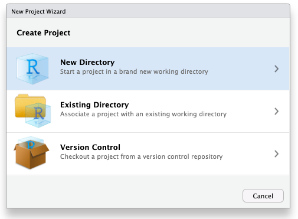
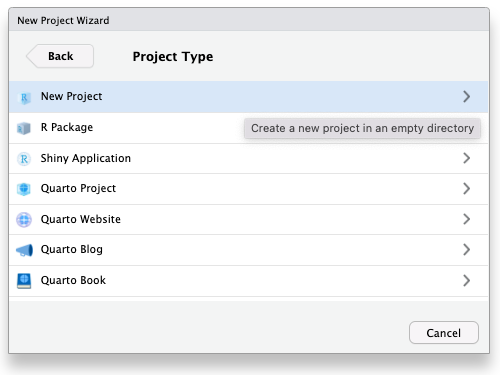

2 Reports

Intended Learning Outcomes
Functions used
- built-in (you can always use these without loading any packages)
- tidyverse (you can use all these with
library(tidyverse))- readr::
readr::read_csv(),readr::row_spec() - dplyr::
dplyr::count(),dplyr::filter() - ggplot2::
ggplot2::aes(),ggplot2::geom_point(),ggplot2::ggplot(),ggplot2::labs()
- readr::
- other (you need to load each package to use these)
- tinytex::
tinytex::install_tinytex()
- tinytex::
Download the Quarto Cheat Sheet and Markdown Cheat Sheet.
Setup
For reference, here are the packages we will use in this chapter. You may need to install them, as explained in Section 1.2.1, if running the code below in the console pane gives you the error Error in library(package_name) : there is no package called ‘package_name’.
2.1 Why use reproducible reports?
Have you ever worked on a report, creating a summary table for the demographics, making beautiful plots, getting the analysis just right, and copying all the relevant numbers into your manuscript, only to find out that you forgot to exclude a test run and have to redo everything?
A reproducible report fixes this problem. Although this requires a bit of extra effort at the start, it will more than pay you back by allowing you to update your entire report with the push of a button whenever anything changes.
Additionally, studies show that many, if not most, papers in the scientific literature have reporting errors. For example, more than half of over 250,000 psychology papers published between 1985 and 2013 have at least one value that is statistically incompatible, such as a p-value that is not possible given a t-value and degrees of freedom (Nuijten et al., 2016). Reproducible reports help avoid transcription and rounding errors.
We will make reproducible reports following the principles of literate programming. The basic idea is to have the text of the report together in a single document along with the code needed to perform all analyses and generate the tables. The report is then “compiled” from the original format into some other, more portable format, such as HTML or PDF. This is different from traditional cutting and pasting approaches where, for instance, you create a graph in Microsoft Excel or a statistics program like SPSS and then paste it into Microsoft Word.
2.2 Projects
Before we write any code, first, we need to get organised. Projects in RStudio are a way to group all the files you need for one project. Most projects include scripts, data files, and output files like the PDF report created by the script or images.
2.2.1 File System
Modern computers tend to hide the file system from users, but we need to understand a little bit about how files are stored on your computer in order to get a script to find your data. Your computer’s file system is like a big box (or directory) that contains both files and smaller boxes, or “subdirectories”. You can specify the location of a file with its name and the names of all the directories it is inside.
For example, if Lisa is looking for a file called report.qmdon their Desktop, they can specify the full file path like this: /Users/lisad/Desktop/report.qmd, because the Desktop directory is inside the lisad directory, which is inside the Users directory, which is located at the base of the whole file system. If that file was on your desktop, you would probably have a different path unless your user directory is also called lisad. You can also use the ~ shortcut to represent the user directory of the person who is currently logged in, like this: ~/Desktop/report.qmd.
2.2.2 Default working directory
First, make a new directory (i.e., folder) on your computer where you will keep all of your R projects. Name it something like “R-projects” (avoid spaces and other special characters). Make sure you know how to get to this directory using your computer’s Finder or Explorer.
If possible, don’t use a network or cloud drive (e.g., OneDrive or Dropbox), as this can sometimes cause problems. If you’re working from a networked drive and you are having issues, a helpful test is to try moving your project folder to the desktop to see if that solves the problem.
Next, open
On some versions of Windows 10 and 11, it can cause problems if path names are longer than 260 characters. Set your default working directory to a path with a length well below that to avoid problems when R creates temporary files while rendering a report. If you are having issues, a helpful test is to try moving your project folder to the desktop to see if that solves the problem as this will likely have a much short path name than most other folders on your computer.
You can set the working directory to another location manually with menu commands:
2.2.3 Start a Project
To create a new project for the work we’ll do in this book:
File > New Project… - Select
New Directory - Select
New Project - Name the project
reprores - Save it inside the default
R-projectsdirectory - Click
Create Project
RStudio will restart itself and open with this new project directory as the working directory.



Click on the Files tab in the lower right pane to see the contents of the project directory. You will see a file called reprores.Rproj, which is a file that contains all of the project information. When you’re in the Finder/Explorer, you can double-click on it to open up the project.
Depending on your settings, you may also see a directory called .Rproj.user, which contains your specific user settings. You can ignore this and other “invisible” files that start with a full stop.
Don’t ever save a new project inside another project directory. This can cause some hard-to-resolve problems.
2.2.4 Naming things
Before we start creating new files, it’s important to review how to name your files. This might seem a bit pedantic, but following clear naming rules so that both people and computers can easily find things will make your life much easier in the long run. Here are some important principles:
- file and directory names should only contain letters, numbers, dashes, and underscores, with a full stop (
.) between the file name and extension (that means no spaces!) - be consistent with capitalisation (set a rule to make it easy to remember, like always use lowercase)
- use underscores (
_) to separate parts of the file name, like the title and date, and dashes (-) to separate words in each part (e.g.,thesis-analysis_2024-10-31.Rmd) - name files with a pattern that alphabetises in a sensible order and makes it easy for you to find the file you’re looking for
- prefix a file name with an underscore to move it to the top of the list, or prefix all files with numbers to control their order
For example, these file names are a mess:
report.docreport final.docData (Customers) 11-15.xlsCustomers Data Nov 12.xlsfinal report2.docproject notes.txtVendor Data November 15.xls
Here is one way to structure them so that similar files have the same structure and it’s easy for a human to scan the list or to use code to find relevant files. See if you can figure out what the last one should be.
_project-notes.txtreport_v1.docreport_v2.docreport_v3.docdata_customer_2021-11-12.xlsdata_customer_2021-11-15.xls
2.3 Naming practice
Think of other ways to name the files above. Look at some of your own project files and see what you can improve.
2.4 Quarto
Throughout this course we will use quarto to create reproducible reports with a table of contents, text, tables, images, and code. The text can be written using markdown, which is a way to specify formatting, such as headers, paragraphs, lists, bolding, and links. Code is placed in code chunks.
You may have learned R Markdown in other classes, or see .Rmd files in other people’s projects. Quarto is basically a newer and more general version of R Markdown, with many improvements. The formatting is very similar, and you can often convert R Markdown files by changing the file extension from .Rmd to .qmd with no or very few other changes.
2.4.1 New document
To open a new quarto document, click Reports. You can also change the author name. Keep the output format as HTML. Save the file as 02-reports.qmd.
You can use the visual editor if you have RStudio version 1.4 or higher. This will be a button at the top of the source pane and the menu options should be very familiar to anyone who has worked with software like Microsoft Word. However, the examples in the rest of this book are shown for the source editor, not the visual editor, so delete the line editor: visual if needed.
In the visual editor, you won’t see the hashes that create headers, or the asterisks that create bold and italic text. You also won’t see the backticks that demarcate inline code.

If you try to add the hashes, asterisks and backticks to the visual editor, you will get frustrated as they disappear. If you succeed, your text in the regular editor will be full of backslashes and the code will not run.
2.4.2 Header
At the top of the file, you will see some text between a pair of three dashes:
This is the YAML header, which provides information to quarto about how you want to render a document. Here, it sets the title, author, and format. Add a new line with the date, e.g., date: 2024-10-04.
You will learn in Section 2.6.3 how to further customise your document using information in the header.
2.4.3 Markdown
Now replace all of the text beneath the header with the following text. Make sure to skip a line or two after the three dashes.
## Basic Markdown
Now I can make:
* headers
* paragraphs
* lists
* [links](https://psyteachr.github.io/reprores-v5/)If you start a line with hashes, it creates a header. One hash makes a document title, two hashes make a document header, three a subheader, and so on. Make sure you leave a blank line before and after a header, and don’t put any spaces or other characters before the first hash.
Put a blank line between paragraphs of text. Bullet-point list items start with “*” or “-” and numbered list items start with “1.”. Indent list items to make nested lists.
2.4.4 Text Styles
See Markdown Basics for a quick reference.
Add an ordered list of different text styles to your document, like bold, italic, strikethrough, subscript, superscript, code, and a task item.
2.4.5 Code chunks
Add a new level-2 header called “Code Chunks”, skip a line, and add the following text at the end:
What you have created is a code chunk. In quarto, anything written between lines that start with three backticks is processed as code, and anything written outside is processed as markdown. This makes it easy to combine both text and code in one document. On the default RStudio appearance theme, code chunks are grey and plain text is white, but the actual colours will depend on which theme you have applied.
When you create a new code chunk you should notice that the grey box starts and ends with three backticks ```. One common mistake is to accidentally delete these backticks. Remember, code chunks and text entry are different colours - if the colour of certain parts of your Markdown doesn’t look right, check that you haven’t deleted the backticks.
Inside your code chunk, add the code you created in Section 1.3.4.
In Chapter 1, we asked you to type code into the console. Now, we want you to put code into code chunks in quarto files to make the code reproducible. This way, you can re-run your code any time the data changes to update the report, and you or others can inspect the code to identify and fix any errors.
However, there will still be times that you need to put code in the console instead of in a script, such as when you install a new package. In this book, code chunks will be labelled with whether you should run them in the console or add the code to a script.
2.4.6 Running code
When you’re working in a quarto document, there are several ways to run your lines of code.
First, you can highlight the code you want to run and then click
Alternatively, you can press the green “play” button at the top-right of the code chunk and this will run all lines of code in that chunk.

Even better is to learn some of the keyboard shortcuts for RStudio. To run a single line of code, make sure that the cursor is in the line of code you want to run (it can be anywhere) and press
Run your code using each of the methods above. You should see the variables name, age, today, and halloween appear in the environment pane.
Restart R to clear the objects. They should disappear from the environment (see Section A.1.2.2 if they don’t disappear).
Run you code again, and then change the value of name in the script. When/how does it change in the Environment tab?
2.4.7 Inline code
One important feature of quarto for reproducible reports is that you can combine text and code to insert values into your writing using inline coding. If you’ve ever had to copy and paste a value or text from one file to another, you’ll know how easy it can be to make mistakes. Inline code avoids this.
Add a new level-2 header called “Inline Code”, then copy and paste the text below. If you used a different variable name than halloween, you should update this with the name of the object you created, but otherwise don’t change anything else.
2.4.8 Rendering your file
Now we are going to render the file into a document type of our choosing. In this case we’ll create a default html file, but you will learn how to create other files like Word and PDF in Section 2.6.5. To render your file, click the
The console pane will open a tab called “Background Jobs”. This is because quarto is not an R package, but a separate application on your computer. You can make this application run with commands from R, or run it from the command line yourself. You may see some text in the Background Jobs window, like “Processing file: 02-reports.qmd” and eventually “Output created: 02-reports.html”. Your rendered html file may pop up in a separate web browser, a pop-up window in RStudio, or in the Viewer tab of the lower right pane, depending on your RStudio settings.
That slightly odd bit of text you copied and pasted now appears as a normal sentence with the values pulled in from the objects you created.
My name is Lisa and I am 47 years old. It is -284 days until Halloween, which is my favourite holiday.
Edit your file to put the code chunk that defines the objects name, age, today and halloween after the inline text that uses it and render. What happened and why?
2.5 Writing a report
We’re going to write a basic report for this dataset using quarto to show you some more of the features. We’ll be expanding on almost every bit of what we’re about to show you throughout this course; the most important outcome is that you start to get comfortable with how quarto works and what you can use it to do.
2.5.1 Setup Chunk
Most of your quarto documents should have a setup chunk at the top that loads any necessary libraries and sets default values.
Add the following just below the YAML header.
The function library(tidyverse) makes tidyverse functions available to your script. You should always add the packages you need in your setup chunk. Often when you are working on a script, you will realize that you need to load another add-on package. Don’t bury the call to library(package_I_need) way down in the script. Put it in the setup chunk so the user has an overview of what packages are needed.
2.5.2 Chunk Options
The chunk execution option label above designates this as the setup chunk, and the include option makes sure that this chunk and any output it produces don’t end up in your rendered document.
Chunk options are structured like #| option: value, and go at the very top of a code chunk. You can also set default values in the YAML header under execute: (see Section 2.6.1 below).
Make sure there are no blank lines, code, or comments before any chunk options, otherwise the options will not be applied.
2.5.3 Online sources
Now, rather than using objects we have created from scratch, we will read in a data file. First, let’s try loading data that is stored online.
Create a new level 2 header called “Data Analysis”, add a code chunk below it, and copy, paste, and run the below code. This code loads some simulated experiment data.
- The data is stored in a
.csvfile so we’re going to use theread_csv()function to load it in. - Note that the url is contained within double quotation marks - it won’t work without this.
- You should see a message that starts with “Rows: 10 Columns: 4”, you can ignore this for now.
If you get an error message that looks like:
Error in read_csv(“https://psyteachr.github.io/reprores/data/smalldata.csv”) :
could not find function “read_csv”
This means that you have not loaded tidyverse. Check that library(tidyverse) is in the setup chunk and that you have run the setup chunk.
This dataset is a few lines of simulated data for an experiment with 10 participants, 2 groups (experimental and control) and two dependent measures (pre and post). There are multiple ways to view and check a dataset in R. Do each of the following and make a note of what information each approach seems to give you. If you’d like more information about each of these functions, you can look up the help documentation with ?function:
Click on the smalldata object in the environment pane, or run each of the following lines of code in the console:
2.5.4 Local data files
More commonly, you will be working from data files that are stored locally on your computer. But where should you put all of your files? You usually want to have all your scripts and data files for a single project inside one folder on your computer, that project’s working directory, and we have already set up the main directory reproresfor this course.
You can organise files in subdirectories inside this main project directory, such as putting all raw data files in a subdirectory called data and saving any image files to a subdirectory called images. Using subdirectories helps avoid one single folder becoming too cluttered, which is important if you’re working on big projects.
In your reprores directory, create a new folder named data, download a copy of the data file, and save it in this new subdirectory.
To load in data from a local file, again we can use the read_csv() function, but this time rather than specifying a url, give it the subdirectory and file name.
Use tab auto-complete when typing file names in a code chunk. After you type the first quote, hit tab to see a drop-down menu of the files in your working directory. You can start typing the name of the subdirectory or file to narrow it down. This is really useful for avoiding annoying errors because of typos or files not being where you expect.
Things to note:
- You must include the file extension (in this case
.csv) - The subdirectory folder name (
data) and the file name are separated by a forward slash/ - Precision is important, if you have a typo in the file name it won’t be able to find your file; remember that R is case sensitive -
SmallData.csvis a completely different file tosmalldata.csvas far as R is concerned.
2.5.5 Data analysis
For this report we’re just going to present some simple stats for two groups: “control” and “exp”. We’ll come back to how to write this kind of code yourself in Chapter 4. For now, see if you can follow the logic of what the code is doing via the code comments.
Create a new code chunk, then copy, paste and run the following code and then view group_counts by clicking on the object in the environment pane.
Because each row of the dataset is a participant, this code gives us a nice and easy way of seeing how many participants were in each group; it just counts the number of rows in each group.
| group | n |
|---|---|
| control | 5 |
| exp | 5 |
Copy and paste the text below into the white space below the code chunk that loads in the data. Save the file and then render to view the results.
Try and match up the inline code with what is in the group_counts table. Of note:
- The
$sign is used to indicate specific variables (or columns) in an object using theobject$variablesyntax. - Square brackets with a number e.g.,
[1], indicate a particular observation - So
group_counts$n[1]asks the inline code to display the first observation of the variablenin the datasetgroup_counts.
Add another line that reports the total numbers of participants in the experimental condition using inline code. Using either the visual editor or text markups, add in bold and italics so that it matches the others.
2.5.6 Code comments
In the above code we’ve used code comments and it’s important to highlight how useful these are. You can add comments inside R chunks with the hash symbol (#). R will ignore characters from the hash to the end of the line.
It’s usually good practice to start a code chunk with a comment that explains what you’re doing there, especially if the code is not explained in the text of the report.
If you name your objects clearly, you often don’t need to add clarifying comments. For example, if I’d named the three objects above total_participants, mean_pre and mean_post, I would omit the comments. It’s a bit of an art to comment your code well, but try to add comments as you’re working through this book - it will help consolidate your learning and when future you comes to review your code, you’ll thank past you for being so clear.
2.5.7 Images
As the saying goes, a picture paints a thousand words, and sometimes you will want to communicate your data using visualisations.
Create a code chunk to display a graph of the data in your document after the text we’ve written so far. We’ll use some code that you’ll learn more about in Chapter 3 to make a simple bar chart that represents the sales data – focus on trying to follow how bits of the code map on to the plot that is created.
Add a new level-3 header called “Visualisation”. Copy and paste the code below into a new chunk. Run the code in your script to see the plot it creates and then render the file to see how it is displayed in your document.

You can also include images that you did not create in R using the markdown syntax for images. This is very similar to loading data in that you can either use an image that is stored on your computer, or via a url.
The general syntax for adding an image in markdown is {#fig-name}. You can leave the caption blank, but must include the square brackets. The curly brackets are optional, and allow you to reference the figure as @fig-name (change the “name” part for each new figure). You can also add other formatting options in the curly brackets, like an image width or CSS styles.
Most images on Wikipedia are public domain or have an open license. You can search for images by license on Google Images by clicking on the

2.5.8 Tables
Rather than a figure, we might want to display our data in a table.
Add a new level 3 heading to your document, name the heading “Tables” and then create a new code chunk below this.
First, let’s see what the table looks like if we don’t make any edits. Simply write the name of the table you want to display in the code chunk (in our case smalldata) and then render to see what it looks like.
# A tibble: 10 × 4
id group pre post
<chr> <chr> <dbl> <dbl>
1 S01 control 98.5 107.
2 S02 control 104. 89.1
3 S03 control 105. 124.
4 S04 control 92.4 70.7
5 S05 control 124. 125.
6 S06 exp 97.5 102.
7 S07 exp 87.8 126.
8 S08 exp 77.2 72.3
9 S09 exp 97.0 109.
10 S10 exp 102. 114. This isn’t very pretty, but we can change the print style.
Change the line format: html in the YAML header to the following.
Make sure to keep the spaces exactly the same (YAML is very picky about spaces). In YAML, if a key: value pair doesn’t have any sub-options, you can write it on one line, like format: html. But if you want to set any html options, you have to indent it like above.
2.5.9 Cross references
You can automatically number your figures and tables by giving them labels that start with fig- or tbl-, and referring to them in the text like @fig-name or @tbl-name (see quarto cross references for more details).
Add the following text above the chunk containing the table:
Also, add the two commented lines below to the top of the code chunk:
These set the figure label so you can reference it in the document, and the table caption. The label must start with “tbl-” to automatically add it to the numbered list of tables. Now, when you render your document, tables will display in “kable” format, which looks much nicer.
All data are shown in Table 2.1.
| id | group | pre | post |
|---|---|---|---|
| S01 | control | 98.46606 | 106.70508 |
| S02 | control | 104.39774 | 89.09030 |
| S03 | control | 105.13377 | 123.67230 |
| S04 | control | 92.42574 | 70.70178 |
| S05 | control | 123.53268 | 124.95526 |
| S06 | exp | 97.48676 | 101.61697 |
| S07 | exp | 87.75594 | 126.30077 |
| S08 | exp | 77.15375 | 72.31229 |
| S09 | exp | 97.00283 | 108.80713 |
| S10 | exp | 102.32338 | 113.74732 |
If you’re feeling confident with what we have covered so far, you can also explore the gt package, which is complex, but allows you to create beautiful customised tables. Riding tables with {gt} and {gtExtras} is an outstanding tutorial.
2.6 Refining your report
2.6.1 Execution defaults
Let’s finish by tidying up the report and organising our code a bit better.
You can set more default options for your document in the YAML header. The help pages for quarto execution options has a full list of options. However, the most useful and common options to change for the purposes of writing reports revolve around whether you want to show your code and the size of your images.
Add the code below to your YAML header and then try changing each option from false to true and changing the numeric values then render the file again to see the difference it makes.
---
execute:
echo: false # whether to show code chunks
message: false # whether to show messages from your code
warning: false # whether to show warnings from your code
fig-width: 8 # figure width in inches (at 96 dpi)
fig-height: 5 # figure height in inches (at 96 dpi)
---You can also override defaults in a code cell. See quarto code cells help for a full list of options.
Note that fig-width and fig-height control the original size and aspect ratio of images generated by R, such as plots. This will affect the relative size of text and other elements in plots. It does not affect the size of existing images at all. However, out-width controls the display size of both existing images and figures generated by R. This is usually set as a percentage of the page width.
```{r}
#| label: fig-full-100
#| fig-width: 8
#| fig-height: 5
#| out-width: '100%'
#| fig-cap: A plot with the default values
ggplot2::last_plot()
```


2.6.2 Override defaults
These setup options change the behaviour for the entire document, however, you can override the behaviour for individual code chunks.
For example, by default you might want to hide your code but there also might be an occasion where you want to show the code you used to analyse your data. You can set echo = FALSE in your setup chunk to make hiding code the default but in the individual code chunk for your plot set echo = TRUE. Try this now and knit the file to see the results.
Additionally, you can also override the default image display size or dimensions.

2.6.3 YAML options
Finally, the YAML header is the bit at the very top of your quarto document. You can set several options here as well.
The df-print: paged option prints data frames using rmarkdown::paged_table() automatically. You can use df_print: kable to default to the simple kable style.
The built-in bootswatch themes are: default, cerulean, cosmo, darkly, flatly, journal, lumen, paper, readable, sandstone, simplex, spacelab, united, and yeti. You can view and download more themes. Try changing the theme to see which one you like best.

YAML headers can be very picky about spaces and semicolons (the rest of R Markdown is much more forgiving). For example, if you put a space before “author”, you will get an error that looks like:
Error in yaml::yaml.load(..., eval.expr = TRUE) :
Parser error: while parsing a block mapping at line 1,
column 1 did not find expected key at line 2, column 2The error message will tell you exactly where the problem is (the second character of the second line of the YAML header), and it’s usually a matter of fixing typos or making sure that the indenting is exactly right.
2.6.4 Table of Contents
The table of contents is created by setting toc: true. This will use the markdown header structure to create the table of contents. The option toc-depth: 3 means that the table of contents will only display headers up to level 3 (i.e., those that start with three hashes: ###), and toc-expand sets wether the sections are expanded or collapsed.
Try changing the values of the toc settings and re-render.
Add {-} after a header title to remove it from the table of contents, e.g.,
If your table of contents isn’t showing up correctly, this probably means that your headers are not set up right. Make sure that headers have no spaces before the hashes and at least one space after the hashes. For example, ##Analysis won’t display as a header and be added to the table of contents, but ## Analysis will.
2.6.5 Formats
So far we’ve just rendered to html. To generate PDF reports, you need to install
Once you’ve done this, update your YAML heading to add a pdf_document section and knit a PDF document. The options for PDFs are more limited than for HTML documents, so if you just replace html with pdf, you may need to remove some options if you get an error that looks like “Functions that produce HTML output found in document targeting PDF output.”
There are many different formats you can render your document to, from HTML and PDF, to Word, Open Office, and ePub. You can also create websites, books, and presentations with a few small changes. See the quarto documentation for more information.
2.7 Bibliography
There are several ways to do in-text references and automatically generate a bibliography in quarto. Quarto files need to link to a BibTex or JSON file (a plain text file with references in a specific format) that contains the references you need to cite. You specify the name of this file in the YAML header, like bibliography: refs.bib and cite references in text using an at symbol and a shortname, like [@tidyverse]. You can also include a Citation Style Language (.csl) file to format your references in, for example, APA style.
2.7.1 Converting from reference software
Most reference software like EndNote or Zotero has exporting options that can export to BibTeX format. You just need to check the shortnames in the resulting file.
Please start using a reference manager consistently through your research career. It will make your life so much easier. Zotero is probably the best one.
- If you don’t already have one, set up a Zotero account
- Add the connector for your web browser (if you’re on a computer you can add browser extensions to)
- Navigate to Easing Into Open Science and add this reference to your library with the browser connector
- Go to your library and make a new collection called “Open Research” (click on the + icon after
My Library)
- Drag the reference to Easing Into Open Science into this collection
- Export this collection as BibTex

The exported file should look like this:
@article{kathawalla_easing_2021,
title = {Easing {Into} {Open} {Science}: {A} {Guide} for {Graduate} {Students} and {Their} {Advisors}},
volume = {7},
issn = {2474-7394},
shorttitle = {Easing {Into} {Open} {Science}},
url = {https://doi.org/10.1525/collabra.18684},
doi = {10.1525/collabra.18684},
abstract = {This article provides a roadmap to assist graduate students and their advisors to engage in open science practices. We suggest eight open science practices that novice graduate students could begin adopting today. The topics we cover include journal clubs, project workflow, preprints, reproducible code, data sharing, transparent writing, preregistration, and registered reports. To address concerns about not knowing how to engage in open science practices, we provide a difficulty rating of each behavior (easy, medium, difficult), present them in order of suggested adoption, and follow the format of what, why, how, and worries. We give graduate students ideas on how to approach conversations with their advisors/collaborators, ideas on how to integrate open science practices within the graduate school framework, and specific resources on how to engage with each behavior. We emphasize that engaging in open science behaviors need not be an all or nothing approach, but rather graduate students can engage with any number of the behaviors outlined.},
number = {1},
urldate = {2022-09-07},
journal = {Collabra: Psychology},
author = {Kathawalla, Ummul-Kiram and Silverstein, Priya and Syed, Moin},
month = jan,
year = {2021},
pages = {18684},
}2.7.2 Creating a BibTeX File
You can also add references manually.
In RStudio, go to File > New File... > Text File and save the file as “refs.bib”.
Add the line bibliography: refs.bib to your YAML header.
2.7.3 Adding references
You can add references to a journal article in the following format:
@article{shortname,
author = {Author One and Author Two and Author Three},
title = {Paper Title},
journal = {Journal Title},
volume = {vol},
number = {issue},
pages = {startpage--endpage},
year = {year},
doi = {doi}
}See A complete guide to the BibTeX format for instructions on citing books, technical reports, and more.
You can get the reference for an R package using the functions citation() and toBibtex(). You can paste the bibtex entry into your bibliography.bib file. Make sure to add a short name (e.g., “ggplot2”) before the first comma to refer to the reference.
@Book{,
author = {Hadley Wickham},
title = {ggplot2: Elegant Graphics for Data Analysis},
publisher = {Springer-Verlag New York},
year = {2016},
isbn = {978-3-319-24277-4},
url = {https://ggplot2.tidyverse.org},
}Google Scholar entries have a BibTeX citation option. This is usually the easiest way to get the relevant values if you can’t add a citation through the Zotero browser connector, although you have to add the DOI yourself. You can keep the suggested shortname or change it to something that makes more sense to you.

2.7.4 Citing references
You can cite references in text like this:
This tutorial uses several R packages [@tidyverse;@rmarkdown].This tutorial uses several R packages (Allaire et al., 2018; Wickham, 2017).
Put a minus in front of the @ if you just want the year:
Kathawalla and colleagues [-@kathawalla_easing_2021] explain how to introduce open research practices into your postgraduate studies.Kathawalla and colleagues (2021) explain how to introduce open research practices into your postgraduate studies.
2.7.5 Uncited references
If you want to add an item to the reference section without citing, it, add it to the YAML header like this:
nocite: |
@kathawalla_easing_2021, @broman2018data, @nordmann2022dataOr add all of the items in the .bib file like this:
nocite: '@*'2.7.6 Citation Styles
You can search a list of style files for various journals and download a file that will format your bibliography for a specific journal’s style. You’ll need to add the line csl: filename.csl to your YAML header.
Add some citations to your refs.bib file, reference them in your text, and render your manuscript to see the automatically generated reference section. Try a few different citation style files.
2.7.7 Reference Section
By default, the reference section is added to the end of the document. If you want to change the position (e.g., to add figures and tables after the references), include the following where you want the references:
Add in-text citations and a reference list to your report.
2.8 Summary
This chapter has covered a lot but hopefully now you have a much better idea of what quarto is able to do. Whilst working in quarto and markdown takes longer in the initial set-up stage, once you have a fully reproducible report you can plug in new data each week or month and simply render, reducing duplication of effort, and the human error that comes with it.
You can access a working quarto file with the code from the example above to compare to your own code.
As you continue to work through the book you will learn how to wrangle and analyse your data and how to use quarto to present it. We’ll slowly build on the available customisation options so over the course of next few weeks, you’ll find your quarto reports start to look more polished and professional.
2.9 Exercises
2.9.1 Create a Project
Create a new project called “cv” (Section 2.2).
2.9.2 Create a New Script
In the “cv” project, create a new quarto document called “cv.qmd” (Section 2.4.1). Edit the YAML header to print data frames using kable and set a custom theme (Section 2.6.3).
2.9.3 Markdown Practice
Write a short paragraph describing you and your work or academic aspirations. Include a bullet-point list of links to related websites (Section 2.4.3).
I am a research psychologist who is interested in open science
and teaching computational skills.
* [psyTeachR books](https://psyteachr.github.io/)
* [Google Scholar](https://scholar.google.com/)2.9.4 Add a Table
Make a subheading titled “Education” and use the following code to load a small table of your education (Section 2.4.5). Edit it to be relevant to you (you can change the categories entirely if you want).
```{r}
tibble::tribble(
~degree, ~topic, ~school, ~year,
"BSc", "BioPsych/AnthroZoo", "University of Michigan", "1998",
"MSc", "Biology", "University of Michigan", "2000",
"GradCert", "Women's Studies", "University of Michigan", "2000",
"PhD", "Psychology", "McMaster University", "2004"
)
```| degree | topic | school | year |
|---|---|---|---|
| BSc | BioPsych/AnthroZoo | University of Michigan | 1998 |
| MSc | Biology | University of Michigan | 2000 |
| GradCert | Women’s Studies | University of Michigan | 2000 |
| PhD | Psychology | McMaster University | 2004 |
2.9.5 Code Execution
Figure out how to make it so that code chunks don’t show in your rendered document (Section 2.6.1).
2.9.6 Add an Image
Add an image of anything relevant (Section 2.5.7).
2.9.7 Use Inline R
Include the current date (Section 2.4.7) in a sentence like:
This CV was created on 2025-08-11.
2.9.8 Render
Render this document to html (Section 2.4.8).
Click on the render button or run the following code in the console. (Do not put it the script!)
::: {.cell}
```{.r .cell-code}
quarto::quarto_render("cv.qmd")
```
:::Glossary
| term | definition |
|---|---|
| absolute-path | A file path that starts with / and is not appended to the working directory |
| chunk | A section of code in an R Markdown file |
| comment | Comments are text that R will not run as code. You can annotate .R files or chunks in R Markdown files with comments by prefacing each line of the comment with one or more hash symbols (#). |
| directory | A collection or “folder” of files on a computer. |
| extension | The end part of a file name that tells you what type of file it is (e.g., .R or .Rmd). |
| markdown | A way to specify formatting, such as headers, paragraphs, lists, bolding, and links. |
| path | A string representing the location of a file or directory. |
| project | A way to organise related files in RStudio |
| quarto | An open-source scientific and technical publishing system. |
| r-markdown | The R-specific version of markdown: a way to specify formatting, such as headers, paragraphs, lists, bolding, and links, as well as code blocks and inline code. |
| relative-path | The location of a file in relation to the working directory. |
| render | To create a file (usually an image or PDF) or widget from source code |
| reproducibility | The extent to which the findings of a study can be repeated in some other context |
| script | A plain-text file that contains commands in a coding language, such as R. |
| working-directory | The filepath where R is currently reading and writing files. |
| yaml | A structured format for information |
Further Resources
- Quarto Guide
- Markdown Basics
- Project Structure by Danielle Navarro
- How to name files by Jenny Bryan
- gt for customised tables